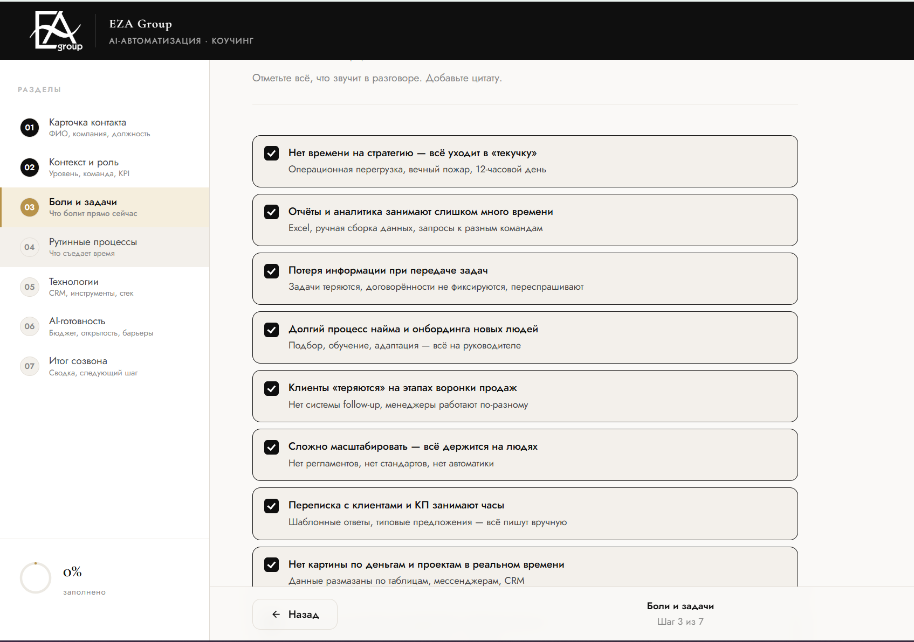
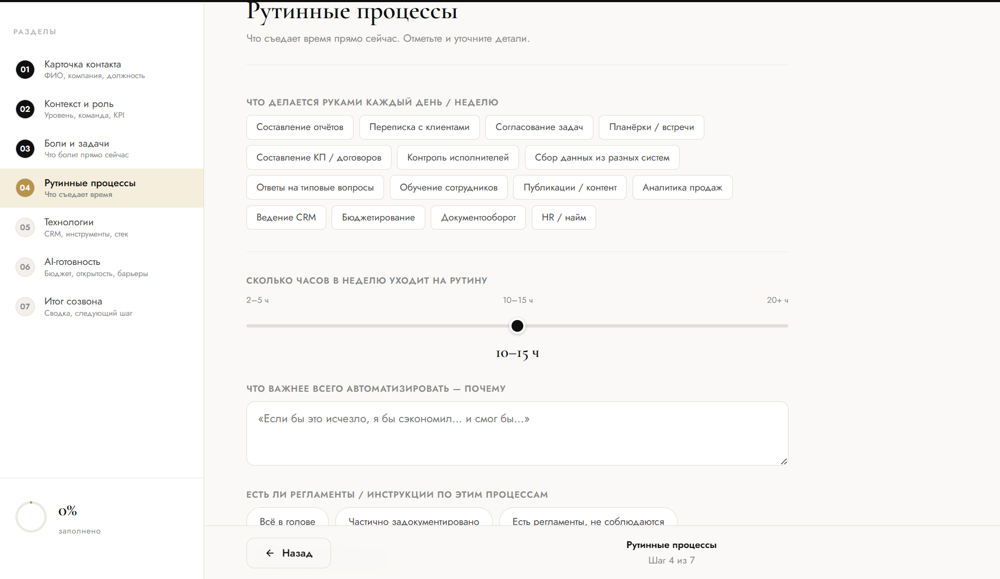
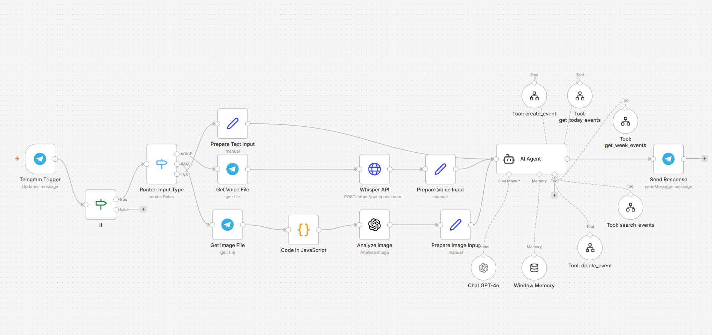
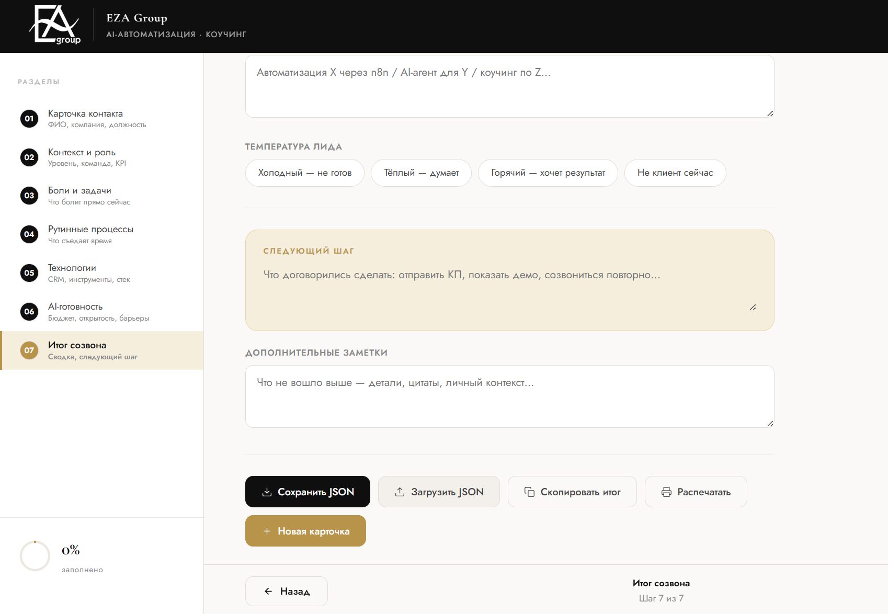

EZA Group строит системы под задачи вашего бизнеса: аналитические дашборды, автоматизация процессов, AI-агенты. От диагностики до запуска.
Когда это актуально
Операционная перегрузка, вечный пожар, 12-часовой день. Стратегия откладывается снова.
Excel, ручная сборка из разных систем, запросы к разным командам. К планёрке данные уже устарели.
Данные размазаны по таблицам, мессенджерам и CRM. Решения — по ощущениям, не по цифрам.
Нет системы follow-up, менеджеры работают по-разному. Деньги уходят — просто потому что никто не написал вовремя.
Нет регламентов, нет стандартов, нет автоматики. Уйдёт один человек — процесс рассыпается.
Слышали, читали, пробовали. Конкретного плана нет, страшно ошибиться и потратить впустую.
Что делаем
Каждый проект начинается с диагностики — выбираем то, что даст максимальный эффект именно для вас.
Единый экран с ключевыми метриками вашего бизнеса. Продажи, операции, финансы — всё в реальном времени, без ручного сбора данных.
от 2 недельУбираем рутину из ежедневной работы: согласования, уведомления, передача данных между системами. Команда фокусируется на задачах, которые нельзя автоматизировать.
от 3 недельСистемы, которые работают без людей: отвечают клиентам, квалифицируют заявки, обрабатывают документы и запускают процессы по триггерам.
от 4 недельНе бросаем после сдачи. Обучаем команду, дорабатываем под обратную связь, сопровождаем первые месяцы работы — пока система не встала на поток.
включено во все проектыПроцесс
Каждый проект проходит 4 этапа — без хаоса, с понятным результатом на каждом шаге.
Погружаемся в ваш бизнес: какие данные есть, где теряется время, что мешает расти. Формируем техническое задание и приоритеты — без воды и шаблонов.
1–2 недели · онлайн или офлайн
Проектируем систему под вашу специфику: какие инструменты, какие интеграции, какой дашборд или агент нужен. Согласовываем до начала разработки.
1 неделя · документ + презентация
Строим систему итерациями: каждые 1–2 недели — рабочая версия для обратной связи. Тестируем на реальных данных вашего бизнеса — не на синтетических примерах.
2–6 недель · зависит от объёма
Передаём систему команде, проводим обучение, остаёмся на связи первые месяцы. Вы не остаётесь один на один с новым инструментом.
Включено в проект
Первый шаг
30 минут — и у вас чёткая картина: где теряете деньги и время, и 1–2 конкретные гипотезы что с этим делать. Без презентаций и продажи.
Кто вы, что за бизнес, какие KPI и главная цель на год.
Что болит прямо сейчас. Цитата из разговора — главная боль одним предложением.
Что съедает время каждый день. Сколько часов в неделю уходит на это.
Какие системы используете: CRM, аналитика, коммуникации, AI-инструменты.
Бюджет, сроки, барьеры. Что мешало внедрить раньше.
Как выглядит успех через 3 месяца после внедрения — своими словами.
Чёткое понимание где теряете деньги и время. 1–2 гипотезы решения под вашу ситуацию. Понимание возможного формата работы и стоимости. Без обязательств — если не подходим друг другу, честно скажем.
Реальные кейсы
Результаты из реальных проектов EZA Group
Частые вопросы
Следующий шаг
Разберём вашу задачу за 30 минут — конкретно и без обязательств.
→ 30 минут · диагностика · без обязательств